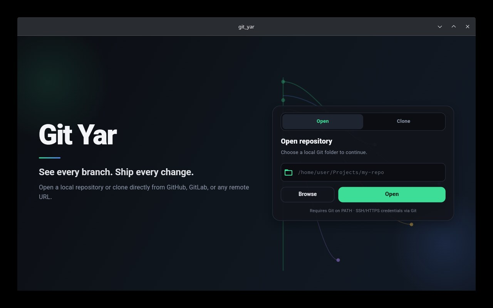
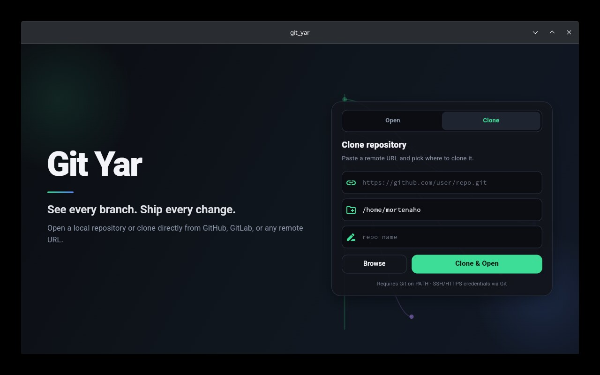
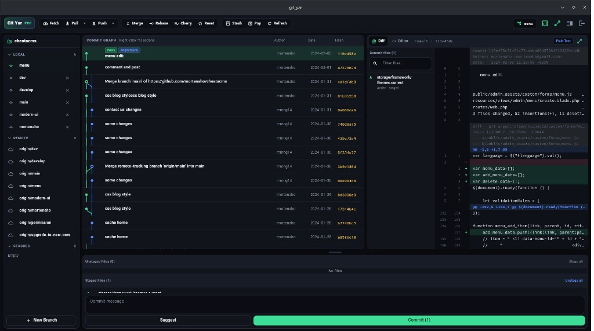
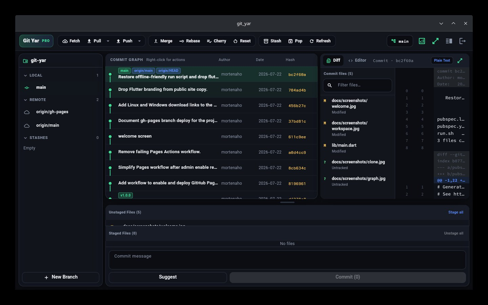

See every branch. Ship every change.
A desktop Git client with a professional commit graph, file diffs, conflict resolver, and analytics reports.
git-yar-1.0.0-linux-x64.tar.gz (~10 MB). Unpack and run git_yar.
git-yar-1.0.0-windows-x64.zip (~12 MB). Unpack and run git_yar.exe.
Requires Git installed and available on PATH.




Visual history with branch lanes, refs, and context actions.
Per-file changes with syntax highlighting and fullscreen mode.
Resolve merge/rebase conflicts with ours/theirs and hunk tools.
Activity charts, contributors, hot files, Markdown export.